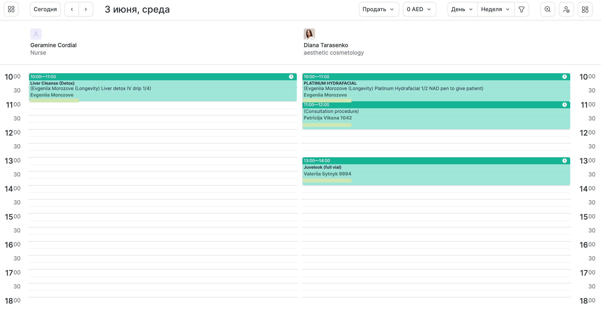
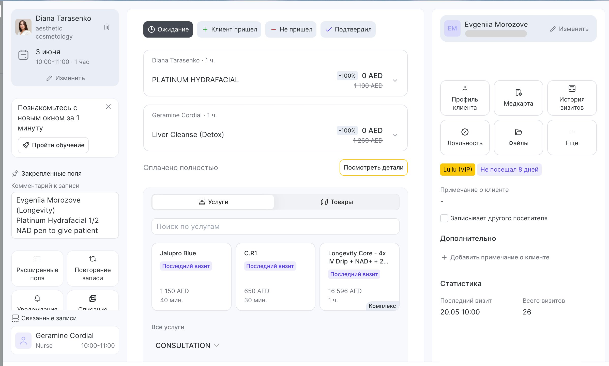
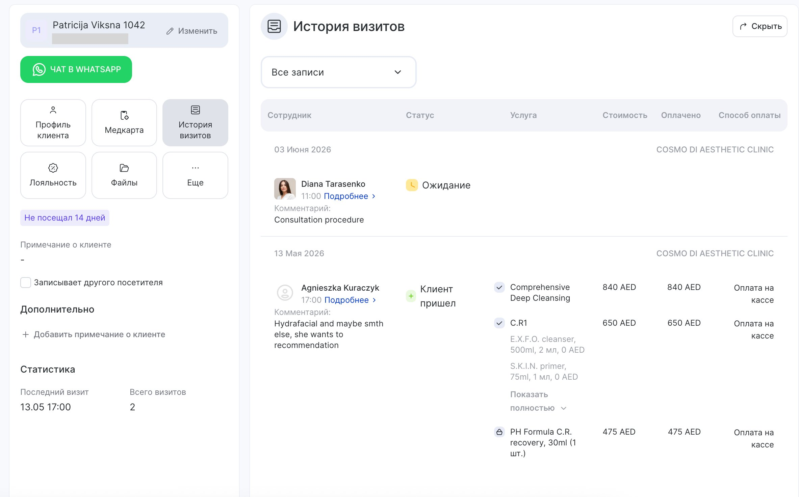
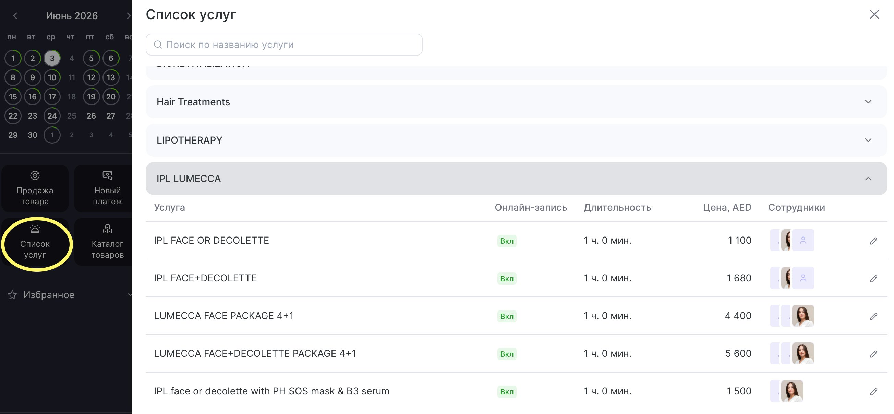
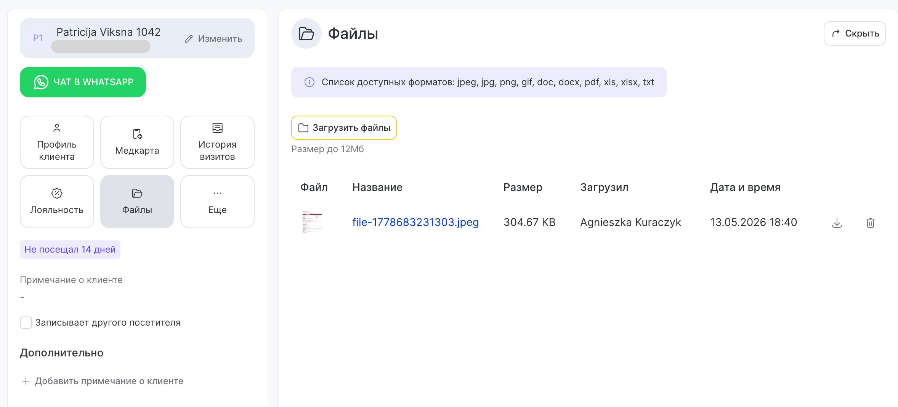

What the cosmetologist does in Alteg.io
Что косметолог делает в Alteg.io
The cosmetologist's daily work with Alteg.io is focused: see the schedule, open the client's panel before each visit, review history and files, check the catalogue and prices when needed, and upload the completed client card after each visit. That's it. Creating new client profiles, search across the whole database, and administrative settings are not the cosmetologist's responsibility — that belongs to the administrator.
Ежедневная работа косметолога в Alteg.io сфокусирована: посмотреть расписание, открыть панель клиента перед каждым визитом, посмотреть историю и файлы, при необходимости свериться с каталогом и ценами, и загрузить заполненную карту клиента после визита. Всё. Создание новых профилей клиентов, поиск по всей базе и административные настройки — не задача косметолога, это зона администратора.
8.1 The daily schedule
8.1 Дневное расписание
The main view is the daily schedule. Each cosmetologist has her own column, with appointments laid out across the working day. Before any client arrives, the cosmetologist opens this view to see who is booked, at what time, for what procedure.
Главная панель — дневное расписание. У каждого косметолога своя колонка с приёмами, разнесёнными по часам рабочего дня. До прихода любого клиента косметолог открывает эту панель, чтобы видеть, кто записан, во сколько и на какую процедуру.

Daily schedule view — appointments through the working day, one column per specialist.
Дневное расписание — приёмы по часам, по колонке на каждого специалиста.
8.2 Opening an appointment, the client panel
8.2 Открытие записи, панель клиента
Clicking on an appointment opens the full client panel. From here, before the client comes into the room, the cosmetologist reviews the visit history, previous notes, photos, files, contraindications and allergies. This is the core preparation step (Block 5.2).
Клик по записи открывает полную панель клиента. Отсюда, до того как клиент зашёл в кабинет, косметолог просматривает историю визитов, прошлые заметки, фото, файлы, противопоказания и аллергии. Это базовый шаг подготовки (Блок 5.2).

An open appointment with the client details, scheduled procedure, and quick access to history.
Открытая запись с данными клиента, выбранной процедурой и быстрым доступом к истории.
8.3 Visit history
8.3 История визитов
The visit history tab shows every previous appointment for this client — date, procedure, specialist. For a returning client this is where the cosmetologist refreshes on what was done, what was recommended, what comes next according to the plan.
Вкладка истории визитов показывает все прошлые приёмы этого клиента — дата, процедура, специалист. Для постоянного клиента это место, где косметолог восстанавливает в памяти, что делалось, что было рекомендовано и что идёт следующим шагом по плану.

Visit history for an individual client — a chronological record of every appointment.
История визитов конкретного клиента — хронологический список всех приёмов.
8.4 Services catalogue and prices
8.4 Каталог услуг и цены
The services section lists every procedure offered, with duration and current price. This is the source of truth for pricing — before quoting any price to a client, verify it here. Prices change, and outdated prices in memory create problems.
Раздел услуг содержит все процедуры клиники, с длительностью и актуальной ценой. Это источник истины по ценам — прежде чем назвать клиенту любую цену, сверяемся здесь. Цены меняются, и старая цена в памяти потом становится проблемой.

The services catalogue with procedures and current prices.
Каталог услуг с процедурами и актуальными ценами.
8.5 Uploading the completed client card
8.5 Загрузка заполненной карты клиента
After every visit, the completed client card (a Word document with the visit details, see Block 5.6) is uploaded into the client's profile via the Files tab. This is how the record stays with the client for the next visit. Open the card template →
The file naming convention is: FirstName_LastName_YYYY-MM-DD.docx
После каждого визита заполненная карта клиента (Word-документ с деталями визита, см. Блок 5.6) загружается в профиль клиента через вкладку «Файлы». Так запись остаётся с клиентом до следующего визита. Открыть шаблон карты →
Формат имени файла: Имя_Фамилия_ГГГГ-ММ-ДД.docx

The Files tab in the client's profile — where each completed client card is uploaded.
Вкладка «Файлы» в профиле клиента — место, куда загружается каждая заполненная карта визита.
What NOT to do in Alteg.io
Что в Alteg.io делать НЕ нужно
- Do not create new client profiles — that is the administrator's job
- Do not edit prices, services, or other catalogue entries
- Do not move appointments in the schedule yourself — flag to the administrator
- Do not delete files or visit records, even old ones
- Do not access or browse profiles of clients you are not seeing today, unless preparing for an upcoming visit
- Не создавать новые профили клиентов — это задача администратора
- Не редактировать цены, услуги и каталог
- Не переносить записи в расписании самостоятельно — сообщать администратору
- Не удалять файлы и записи визитов, даже старые
- Не просматривать профили клиентов, которых не ведёшь сегодня, кроме как для подготовки к ближайшему визиту